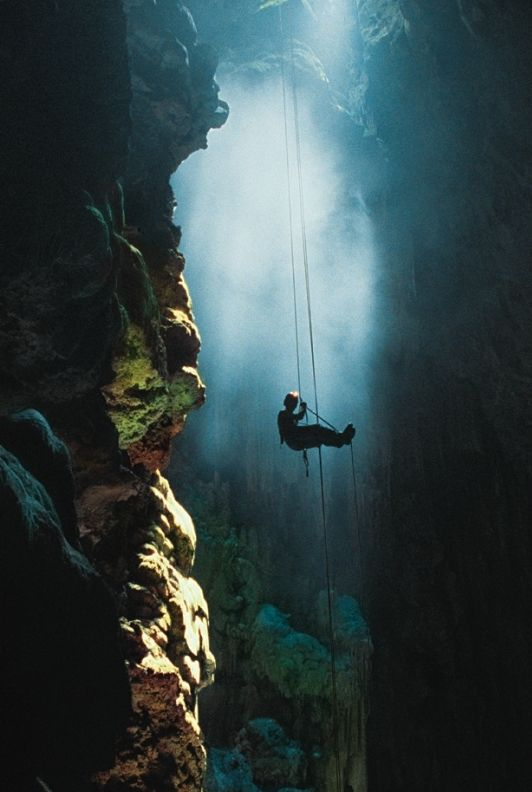
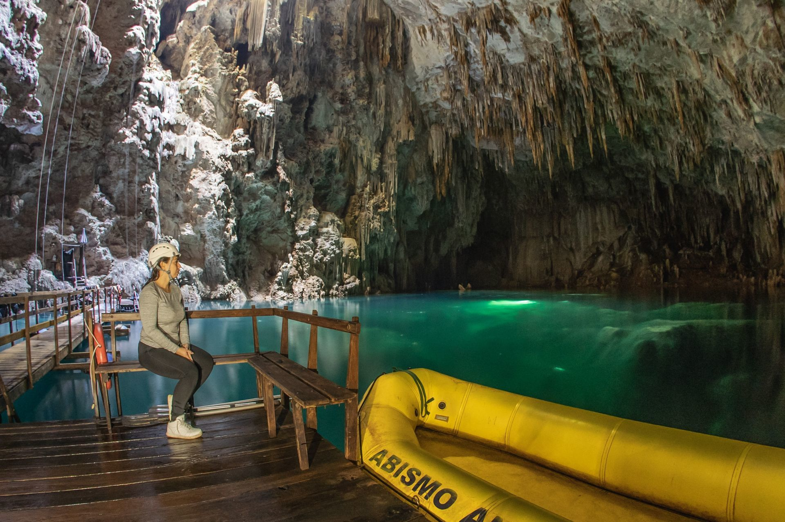

↪ O Abismo Anhumas está a 23km do centro de Bonito. O acesso é super fácil, através da MS-382, que vai até Porto Murtinho. Basta pegar a saída Norte da cidade de Bonito e prosseguir sentido à Gruta do Lago Azul. Então, siga mais 2 km mantendo à direita e você chegará ao nosso estacionamento. Por todo o caminho há placas de sinalização.
⫸ Chegando ao abismo

● Devido às suas formações geológicas, o Abismo Anhumas apresenta apenas uma única maneira de entrar e sair da caverna: por meio de uma fenda. Para isso, é preciso descer 72 metros de altura através de um rapel elétrico até chegar a um deck flutuante, sendo essa apenas a primeira emoção do passeio.
● Vale lembrar ainda que, apesar das dificuldades iniciais de acesso, trata-se de um passeio seguro, sem o registro de acidentes graves desde sua abertura.
● Passeio ótimo para os aventureiros.
⫸ Flutuação na Lagoa

● O ponto máximo do passeio pelo abismo é justamente a flutuação na lagoa. E o melhor de tudo é que não é preciso saber nadar, já que o visitante estará com equipamentos de flutuação.
● As águas cristalinas dessa lagoa misteriosa oferece incríveis 60 metros de visibilidade.
● Utilizam uma roupa de Neoprene: roupa feita de borracha sintética, que além de ser impermeável, também é um material isolante térmico. Assim, não importa a temperatura da água, pois o corpo se manterá sempre em seu nível ideal.
⫸ Mergulho
● Outra alternativa de passeio é o mergulho no lago, para se jogar de vez nessa experiência incrível. Apenas mergulhando é que se pode observar mais claramente as atrações do local.
● O lago possui 80 metros de profundidade, e mesmo quem não tem experiência consegue aproveitar essa opção.
● Nesse caso, o limite máximo que os visitantes não habilitados podem atingir é cerca de 8 metros. Os guias darão uma aula prática e teórica sobre o processo, dando total segurança ao mergulho.
● Por outro lado, quem possui certificação, consegue ir muito além e chegar aos 18 metros de profundidade. Nesse nível, já dá para conferir os gigantescos cones de calcário, que são uma atração à parte do passeio.
● Como a água é cristalina, quem está fazendo a flutuação já consegue ter uma ótima experiência quantos aos cones. Mas é claro que o mergulho com cilindro mostra muito mais sobre essas formações magníficas presentes